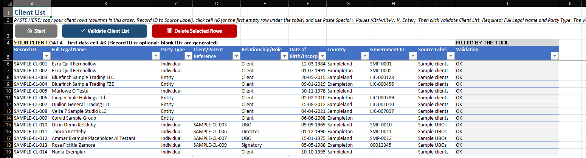
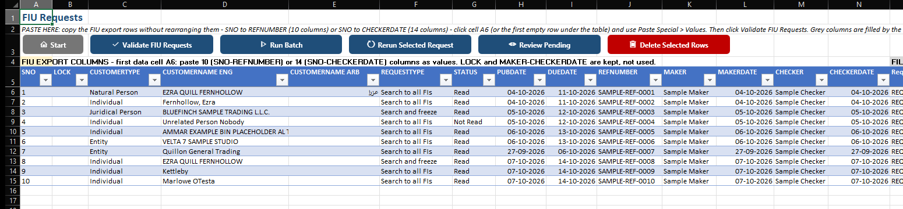
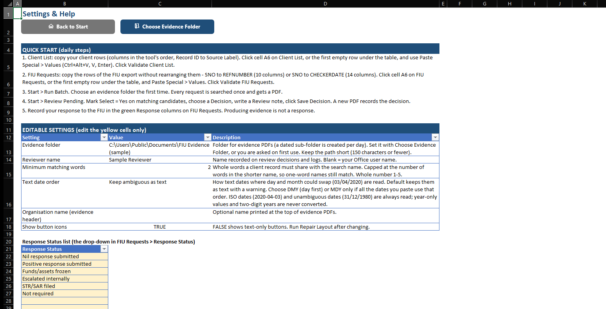

FIU Name Search
An offline Excel tool for searching names from FIU requests against your own client list, recording a human review decision for every possible match and saving a PDF evidence record for every search.
Free · Windows Excel desktop · Includes a blank workbook, a demo workbook with fictional data, full VBA source, README, test report and license. Unblock the zip before extracting (how).
SHA-256 of FIU_Name_Search_v1.1.1.zip:
ccf6692a29eaecc16238f03ae6cd3f67a84c56ea2d1f57ea45f83cc5105bf283
Previous version: v1.1 release (kept unchanged).

What it does
- Paste-only, offline: copy rows from your own client register and FIU requests, then Paste Special > Values into the tool. It never opens, imports or links to another file.
- Matches the FIU export: the first 14 FIU Requests columns are SNO, LOCK, CUSTOMERTYPE, CUSTOMERNAME ENG, CUSTOMERNAME ARB, REQUESTTYPE, STATUS, PUBDATE, DUEDATE, REFNUMBER, MAKER, MAKERDATE, CHECKER, CHECKERDATE. Paste 10 or 14 columns at cell A6 without rearranging them. YYYY-MM-DD dates are shown as DD-MM-YYYY.
- Checked before every search: required fields, party types, dates, repeated IDs and repeated reference + name rows. Formulas are refused with their cell addresses, and data pasted outside the tables is reported instead of ignored.
- Protected sheets: only the input and response cells can be edited. Headers, instructions and the columns the tool fills are locked.
- Batch search: searches every new request once, with pause, cancel and resume.
- Human review: every possible match waits for a person to decide: Name Match, Partial Name Match or No Match, with a written note.
- PDF evidence: one for every search, including zero-candidate results and pending reviews. Never overwritten.
- Audit trail: stable IDs, and every run, search and PDF records the client-list revision and record count it used. Changing the list later never alters earlier results.
- Your data stays with you. The workbook sends nothing anywhere and connects to no portal, email system or cloud service.








What a result means
- A candidate is a possible name match, not an identity match. Every candidate needs human review of dates, country, identifiers and other information.
- "No candidate found" is an engine result, not a conclusion. It only covers the client list you pasted.
- Whole-word matching only. No fuzzy, phonetic or transliteration matching: MOHAMMED does not match MUHAMMAD, and English and Arabic names are not cross-matched.
- It does not respond to the FIU. Any response is made by you through the official channel.
Full detail: SCOPE_NOTE.md.
Requirements
- Windows desktop Excel 2021 or Microsoft 365, 32-bit or 64-bit, with macros enabled.
- Runtime-tested on Microsoft 365 64-bit only. See the known limitations below.
- Not supported: Excel for Mac, Excel for the web, Excel 2019 or older.
Known limitations of v1.1.1
These were not verified for this release. Test on a copy with sample data before using real data.
- Excel 2021 and 32-bit Excel: not runtime-tested. The code avoids Microsoft 365-only functions and is written to be 32/64-bit compatible, but this has not been confirmed.
- Downloaded copy: Protected View and the Enable Content prompt on a file downloaded to another PC were not tested; the download was only simulated.
- Pasting by a person: multi-row pastes were checked with Excel's own Paste Values command (inside the table and directly under it, 10 and 14 FIU columns), driven by automation rather than by hand. Please paste once yourself.
- Sorting and filtering the two protected tables from Excel's header buttons were not tried by hand; Excel limits both on protected sheets.
- Grey columns: only Request ID and Screening Status are checked for values the tool did not write. Paste only into the input columns.
- Leading zeros: a number that only displays leading zeros in your source (123 shown as 000123) arrives as 123. Format such IDs as text first.
Other untested areas (large lists, write-protected folders, non-English Excel) are listed in the test report, section 5. Sheet protection has no password: it prevents accidents, it is not security.
Set up in 5 steps
- Download the zip and unblock it before extracting (see below). Try
FIU_Name_Search_Demo_v1.1.1.xlsmfirst: click Run Batch and review the sample results. - Open
FIU_Name_Search_Public_v1.1.1.xlsmand click Enable Content. Arrange your client register's columns in the tool's order, copy the rows, click cell A6 on Client List (or the first empty row under the table) and use Paste Special > Values. Click Validate Client List. - Copy the FIU export rows as they are, SNO to REFNUMBER (10 columns) or SNO to CHECKERDATE (14 columns), click cell A6 on FIU Requests and use Paste Special > Values. Click Validate FIU Requests.
- Click Run Batch and choose an evidence folder when asked. Every request is searched once and gets a PDF.
- Click Review Pending, mark matching candidates, choose a decision, write a note and click Save Decision. Then record your response in the Response Status and Response Date columns.
Unblock the download
Windows blocks macros in files downloaded from the internet. This is a normal security feature. Do this once:
- Right-click
FIU_Name_Search_v1.1.1.zipand choose Properties. - On the General tab, tick Unblock, then click OK.
- Extract the zip. Everything inside is now unblocked.
On a work computer, your IT team may block internet macros completely; ask them rather than changing security settings yourself. Every line of code is in the src folder as plain text for review. Full guide: HOW-TO-UNBLOCK.md.
Disclaimer
Free, unofficial tool provided as is, without warranty. It is not legal, regulatory or compliance advice and does not decide whether any person or entity is a match. It does not replace your organisation's AML/CFT policies, procedures, screening systems or the judgement of your compliance officer or MLRO. You remain responsible for FIU response deadlines. Before entering client information, confirm your data-protection policies allow it. This is a personal project, not affiliated with any employer, firm, FIU or regulator. Full disclaimer.
License
Creative Commons Attribution-NonCommercial 4.0 International (CC BY-NC 4.0). Free to use and adapt for non-commercial purposes with attribution. License text.
Changelog
1.1.1 · 7 October 2026
Fixed multi-row Paste Values into FIU Requests, which Excel refused with a protected-sheet message. FIU Requests now starts with the 14 FIU export columns in their own order and spelling; paste 10 or 14 columns at A6. YYYY-MM-DD dates are stored as dates and shown as DD-MM-YYYY. Paste instructions name the first data cell. Settings & Help reorganised into Quick Start, Editable Settings, sheet instructions and Troubleshooting. Moving from 1.1: see README > Updating to a new version.
1.1 · 7 October 2026
Paste-only: the Excel/CSV file import was removed, and the tool no longer opens or links to any other file. New Validate FIU Requests button; validation runs again before every search and batch, refuses formulas and reports data outside the tables. FIU Requests input columns come first. Client List and FIU Requests are protected, with a Delete Selected Rows button. Every run records the client-list revision and record count.
1.0 · 7 October 2026
First public release: offline client-list snapshots, whole-word matching engine, batch search with pause and resume, human review, PDF evidence for every search, Search History and response tracking. Full changelog · Full README.